00DC 모터의 개념
1. 정 의
DC 모터란, 고정자로 영구자석을 사용하고, 회전자(전기자)로 코일을 사용하여 구성한 것으로, 전기자에 흐르는 전류의 방향을 전환함으로써 자력의 반발, 흡인력으로 회전력을 생성시키는 모터이다.
모형 자동차, 무선조정용 장난감 등을 비롯하여 여러 방면에서 가장 널리 사용되고 있는 모터이다.
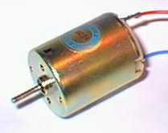
모형용 DC 모터(RE280)
저가격으로 구동력도
크며 사용하기 쉽다
일반적으로 DC 모터는 회전 제어가 쉽고, 제어용 모터로서 아주 우수한 특성을 가지고 있다고 할 수 있다.
그러면 DC 모터는 어떤 점이 우수한가?
2. DC 모터의 특성
가. DC 모터의 특징
(1) 기동 토크가 크다
(2) 인가전압에 대하여 회전특성이 직선적으로 비례한다
(3) 입력전류에 대하여 출력 토크가 직선적으로 비례하며, 또한 출력 효율이 양호하다
(4) 가격이 저렴하다
제어성의 장점을 실제 특성면에서 보면 아랫 그림과 같이 된다.
나. T-I 특성(토크 대 전류)
흘린 전류에 대해 깨끗하게 직선적으로 토크가 비례한다. 즉, 큰 힘이 필요한 때는 전류를 많이 흘리면 되는 것이다.
다. T-N 특성(토크 대 회전수)
토크에 대하여 회전수는 직선적으로 반비례한다.
이것에 의하면 무거운 것을 돌릴 때는 천천히 회전시키게 되고, 이것을 빨리 회전시키기 위해서는 전류를 많이 흘리게 된다.
그리고, 인가전압에 대해서도 비례하며, 그림과 같이 평행하게 이동시킨 그래프로 된다.
이들 2가지 특성은 서로 연동하고 있기 때문에 3가지 요소는 이 그래프에서 관계를 지을 수 있다.
즉, 이들 특성에서 알 수 있는 것은 회전수나 토크를 일정하게 하는 제어를 하려는 경우에는 여하튼 전류를 제어하면 양자를 제어할 수 있다는 것을 나타내고 있다.
이것은 제어회로나 제어방식을 생각할 때, 매우 단순한 회로나 방식으로 할 수 있는 것이다. 이것이 DC 모터는 제어하기 쉽다고 하는 이유이다.
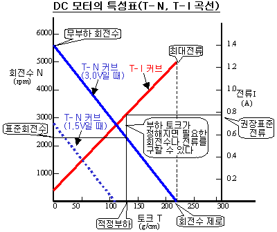
3. DC 모터의 결점
DC 모터의 가장 큰 결점으로는 그 구조상 브러시(brush)와 정류자(commutator)에 의한 기계식 접점이 있다는 점이다.
이것에 의한 영향은 전류(轉流)시의 전기불꽃(spark), 회전 소음, 수명이라는 형태로 나타난다.
그리고, 마이크로컴퓨터 제어를 하려는 경우는 "노이즈"가 발생하게 된다. 따라서 이 노이즈 대책이 유일한 과제가 될 수 있다.
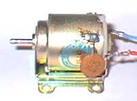
이 노이즈 대책을 위해서는 아랫 그림과 같이 각 단자와 케이스 사이에 0.01μF∼0.1μF 정도의 세라믹 콘덴서를 직접 부착한다. 이것으로 정류자에서 발생하는 전기불꽃을 흡수하여 노이즈를 억제할 수 있다.
DC 모터의 노이즈 대책에는 콘덴서를 케이스와 단자간에 직접 부착한다.
콘덴서의 리드는 가급적 짧게 한다.
4. DC 모터의 규격 실례
흔히 일반적으로 사용하는 소형 DC 모터의 대명사라고 할 수 있는 마부치의 모터에 대해 살펴 보기로 한다.
이 모터의 특성은 아래 표와 같이 되어 있다.
선택의 기준은 적정 부하시의 토크와 회전수의 크기이다.
즉, 어느 정도 무게가 있는 것을 얼마나 빠르게 동작시킬 수 있는가 하는 점이 모터를 선택하는데 필수 사항이 될 것이다.
모델명 | 규정전압 | 무부하시 | 최대효율시(적정부하) | 기동시(정지시) | ||||||||
적정 | 표준 | 회전수 | 전류 | 회전수 | 전류 | 토크 | 토크 | 출력 | 토크 | 토크 | 전류 | |
V | V | r/min | A | r/min | A | g·cm | mN·m | W | g·cm | mN·m | A | |
FA130RA | 1.5-3.0 | 1.5 | 9100 | 0.20 | 7000 | 0.66 | 6.0 | 0.59 | 0.43 | 26 | 2.55 | 2.20 |
3.0 | 16400 | 0.23 | 13200 | 0.95 | 8.5 | 0.83 | 1.15 | 44 | 4.31 | 3.92 | ||
RE140RA | 1.5-3.0 | 1.5 | 8100 | 0.21 | 6100 | 0.66 | 6.5 | 0.64 | 0.41 | 28 | 2.74 | 2.10 |
3.0 | 14200 | 0.25 | 11200 | 0.98 | 10 | 0.98 | 1.15 | 53 | 5.19 | 3.87 | ||
RE260RA | 1.5-30 | 1.5 | 6300 | 0.16 | 5000 | 0.64 | 10 | 0.98 | 0.51 | 50 | 4.90 | 2.56 |
3.0 | 12300 | 0.20 | 10100 | 0.97 | 15 | 1.47 | 1.55 | 90 | 8.82 | 4.73 | ||
RE280RA | 1.5-3.0 | 1.5 | 4600 | 0.12 | 3700 | 0.53 | 11 | 1.08 | 0.42 | 62 | 6.08 | 2.30 |
3.0 | 9200 | 0.16 | 7800 | 0.85 | 20 | 1.96 | 1.60 | 130 | 12.7 | 4.70 | ||
RE280SA | 1.5-4.5 | 3.0 | 7100 | 0.16 | 5900 | 0.88 | 26 | 2.55 | 1.57 | 170 | 16.7 | 4.80 |
4.5 | 10400 | 0.19 | 8900 | 1.15 | 34 | 3.33 | 3.10 | 240 | 23.5 | 6.90 | ||
RS540SH | 4.5-12 | 12 | 17500 | 0.95 | 15100 | 5.93 | 325 | 31.9 | 50.3 | 2350 | 230 | 37.0 |
표 2-1 마부치 DC 모터 규격표
[모터의 선택법]
실제로 모터는 어떻게 선택하면 되는가?
이것은 위의 표 가운데서 토크와 회전수를 기준으로 선택한다.
연 습 문 제
다음 각 물음에 대하여 답을 하시오.
1. DC 모터가 무엇인지 설명하시오
2. DC 모터의 특징에 대해서 설명하고 장점과 단점을 나열하시오.
01토크를 구하는 방법과 기어의 사용법
1. 토크의 정의
모터 등의 선택시에 필요하게 되는 파라미터 가운데서 "토크"라고 하는 것이 있다.
이 토크(torque)란, 회전력이라고도 표현할 수 있는데, 물체를 동작시키려 할 때에 필요로 하는 힘을 표현한 것이다.
물체를 동작시킬 때의 필요한 토크는 아랫 그림과 같이 가속기간과 등속운동 기간에서 다르다.
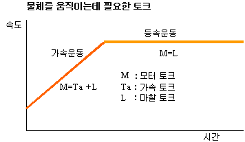
2. 실제 대략적인 계산 토크를 구하는 방법
아랫 그림과 같은 삼륜차를 실례로, 동륜(動輪)의 축에 필요한 토크를 구하는 방법을 설명한다.
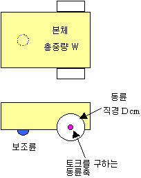
가속기간 토크
Tm=Ta+L
등속운동기간
Tm=L
Tm: 동륜축의 토털 토크
Ta: 가속 토크
L: 마찰부하 토크
이것을 윗 그림의 구체적인 물체에서 계산에 의해 구하려면 다음과 같이 한다.
Ta=J/g×2πf/tTa: 가속토크(kg·cm)
J: 부하관성 모멘트(kg·cm2)
g: 중력가속도(980cm/sec2)
J=WD2/8f: 동륜의 등속운전속도(회전/sec)
t: 가속기간의 시간(sec)
W: 물체의 전체중량(kg)
L=μWD/4μ: 마찰계수(0.09)
D: 동륜의 직경(cm)
3. 예 제
다음과 같은 실제 삼륜차에서 구해 보기로 한다.
W: 2kgD:5cmf: 2회전/sect: 0.5sec
J=2×5×5/8=6.25(kg·cm2)
Ta=6.25/980×6.28×2/0.5=0.16(kg·cm)
L=0.09×2×5/4=0.225(kg/cm)
여기서 가속기간과 등속기간의 토크는 아래와 같이 된다.
Tm(가속)=0.16+0.225=385(g·cm)
Tm(등속)=225(g·cm)
4. 모터의 선택법
위의 예제에 적당한 모터는 어떤 것이 될까?
우선 필요한 기동 토크는 385(g·cm)이지만, 안전율을 1.5배 정도로 보고, 600(g·cm) 이상으로 한다.
앞 페이지의 모터 카탈로그로에서 보면 기동 토크가 600(g·cm)를 넘는 것은 RS540 뿐이다. 그러나 이것으로는 모터 자체가 너무 크고 배터리나 모터의 중량을 가미하면 2kg의 전체 중량을 훨씬 넘어 버린다.
그러면 어떻게 하면 좋을까?
그렇다... 기어를 사용한다. 동륜축에 기어를 부착하여 감속시키는 방법이다. 그렇게 하면 모터의 토크를 기어에 비례하여 감속시킬 수 있다.
간단한 공작 실험을 한다면 모형점에서도 기어 세트를 구입할 수 있는데, 예를 들면 모터는 RE260이고, 기어 세트에서 기어비가 40:1이나 65:1인 경우, 40:1로 했을 때, RE260의 기동 토크는 50~90이므로 기어 후에는 2000부터 3600까지 할 수 있어, 필요한 600(g·cm)은 충분히 구동할 수 있다는 계산이다.
또, 등속 운전시에는 RE260의 적정 부하토크가 10∼15(g·cm)이므로 40배하며, 역시 400부터 600(g·cm)의 토크를 낼 수 있으므로 필요한 225×1.5배=338(g·cm)를 충분히 구동할 수 있다.
그러나, 가속기간의 최종 단계 무렵에는 모터의 적정 부하시의 토크로 구동하는 것이 되는 셈이므로, 600(g·cm)의 토크를 내기 위해서는 모터의 적정 부하시의 토크로 15g·cm 이상의 토크가 필요하기 때문에 1.5V로 구동하는 것은 사실 역부족이다.
따라서 모터에 가하는 전압은 3V로 하게 된다.
즉, 모터가 낼 수 있는 있는 토크는 속도가 높아지면 반비례하여 내려가는 점에 주의할 필요가 있다.
회전수는 충분한가?
적정 부하시의 RE260의 회전수는 5000∼10100이므로 이 40분의 1은 125∼252 회전/분이므로, 2회전/sec 즉 120회전/분을 충분히 커버할 수 있다.
이 관계를 그림으로 나타낸 것이 아랫 그림인데, 황색의 범위가 필요하게 되는 토크와 회전수의 범위로 되지만, 이것이 모터의 적정부가 동작의 범위내에 들어가 있으면 문제없이 구동할 수 있는 것이다.
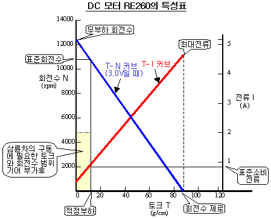
5. 기어 세트의 예
실제로 실험에서 사용하는 기어 세트의 예를 다음 표에 나타낸다.
기어 명칭 | 저속 기어비 | 고속 기어비 | 사용 모터 |
하이스피드박스 | 11.6:1 | 18:1 | RE260 RE140 |
하이파워박스 | 41.7:1 | 64.8:1 | RE260 RE140 |
웜기어박스 | 216:1 | 336:1 | RE260 RE140 |
유성 기어박스 | 4:1~400:1까지 14종 | RE260 RE140 | |
연 습 문 제
다음 각 물음에 대하여 답을 하시오.
1. 토크란 무엇인지 간단하게 설명하시오.
2. 실제 대략적인 토크를 구하는 방법에서 고려해야할 사항은 무엇인가? 삼륜차를 예로 설명하시오.
02모터의 On/Off 제어법
1. 모터 제어의 기본회로
모터를 컴퓨터로 제어할 때의 기본은 On/Off 제어이다.
즉, 모터의 기동, 정지에 대해서만 제어한다.
기동, 정지에 대해서만 제어하는 것은 모든 모터 제어의 기본이다.
모터를 On/Off 제어할 때의 기본회로에는 몇 가지 있다.
가. 트랜지스터 구동(이미터 부하)
아래 그림의 회로에 의해 트랜지스터를 On/Off함으로써 모터를 On/Off한다. 그러나, 이 회로는 트랜지스터가 완전히 포화되는 On 상태로는 할 수 없고, Vce가 크기 때문에 전압손실이 커지고 만다.
동작으로서는 자동적으로 부귀환이 동작하기 때문에 동작은 안정적이다.
이 때문에 간단한 속도제어를 하기 위해 OP 앰프를 추가한 회로가 사용된다.
이 경우, 트랜지스터에서의 전력손실이 그대로 열로 되기 때문에 트랜지스터의 열대책은 충분히 고려할 필요가 있다.
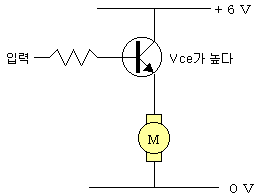
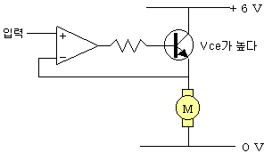
그림 2-6 트랜지스터 구동(이미터 구동)
나. 트랜지스터 구동(컬렉터 부하)
모터를 트랜지스터 컬렉터의 부하로 이용한 것으로, 트랜지스터가 완전히 포화된 On 상태로 구동할 수 있기 때문에 드라이브 능력이 크고 전압손실도 적게 할 수 있다. 따라서 일반적으로는 이 회로가 많이 사용되고 있다.
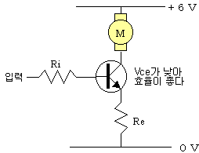
그림 2-7 트랜지스터 구동(컬렉터 구동)
다. 역기전력의 처리
트랜지스터가 On으로 되어 모터가 회전하고 있는 동안에는 모터의 코일에 에너지가 축적되어 있다.
그리고 트랜지스터가 Off로 되면 그 에너지를 방출하려고 하기 때문에, 모터 코일의 양단에는 플러스, 마이너스가 역방향의 기전력이 발생한다.
이 전압은 매우 크기 때문에 그대로는 트랜지스터가 파괴되어 버리는 경우도 있다.
그래서, 이 대책으로, 코일을 쇼트시켜 남아 있는 에너지를 순간적으로 전류로서 흘려 버리는 식으로 해서, 역기전력을 억제하도록 한다.
이 기능을 하는 것이 아랫 그림의 다이오드이며, 역방향의 기전력만 쇼트시키고, 통상적인 전압에 대해서는 고저항으로 되어 전류가 흐르지 않도록 하는 것이다.
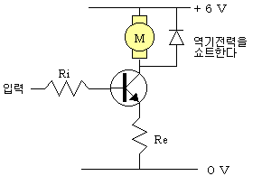
그림 2-8 역기전력 처리
2. H 브리지 제어회로
모터의 On/Off 제어는 상기의 회로를 사용해도 문제없이 할 수 있다. 그러나 회전의 방향을 바꾸고 싶을 때는 어떻게 하면 좋은가?
모터에 가하는 전압의 플러스, 마이너스를 반대로 하면 모터는 역회전하지만, 위의 회로에서는 그것이 곤란하다.
그래서, 단일전원으로 모터에 가하는 전압의 방향을 바꿀 수 있는 회로로 고안된 것이 "H 브리지 회로"이다.
기본 구성은 아랫 그림과 같이 되어 있으며, H형으로 되어 있으므로 이렇게 부르고 있다.
기본동작은 Q1과 Q4의 트랜지스터만 동시에 On으로 하면 청색선과 같이 전류가 흐르고, 모터는 정회전한다.
반대로 Q2와 Q3만 On으로 하면 적색선과 같이 전류가 흐르고, 모터는 역회전하게 된다.
그리고, Q3과 Q4만 동시에 On으로 하면 모터에 브레이크를 거는 동작으로 된다.
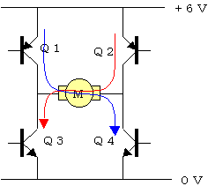
그림 2-9 H 브릿지 모터 제어회로
3. 모터 드라이버 IC
최근에는 모터 드라이브용의 전용 IC가 나돌고 있는데, 이런 IC 내부에는 위의 H 브리지가 내장되어 있는 것이 대부분이므로, 트랜지스터 등의 개별 부품으로 구성할 필요는 거의 없다.
당연한 일이지만, 역기전력 흡수용의 다이오드도 내장되어 있으며, 그 외에 열차단 회로나 과전류 보호회로도 내장되어 있다.
TA7257P
·출력전류 1.5A(ave) 4.5A(peak)로 대용량
·모드는 정회전, 역회전, 스톱, 브레이크의 4가지 모드
·역기전력 흡수용 다이오드 내장, 열차단, 과전류 보호회로 내장
·동작전원전압 6∼18V
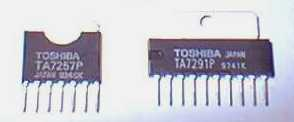
그림 2-10 IC의 외형
TA7291P
·최대 전원전압: 4.5∼20V
·출력전류: 1.0A(평균) 1.5A(최대)
·열차단 회로 내장
·출력단자 protector 회로 내장
·역기전력 흡수용 다이오드 내장
·입력 histeresis 회로 내장
·standby 회로 내장
이들 IC의 내부는 아랫 그림과 같이 되어 있으며, H 브리지가 내장되어 있다.
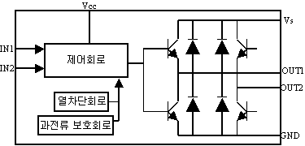
그림 2-11 IC의 내부
4. 실제 사용 예
모터 제어용 드라이버 IC의 실제 사용 회로 예는 아랫 그림과 같이 된다. PIC에 접속하는 것은 IN1, IN2의 2라인 뿐이며, 이것으로 정/역회전, 스톱을 제어할 수 있다.
아랫 그림은 무선조정 자동차의 차량 탑재측 컨트롤러이며, 2개의 모터를 무선조정 수신기로부터의 시리얼 신호를 해석하여 펄스폭에 따라 전진/후진을 제어한다.
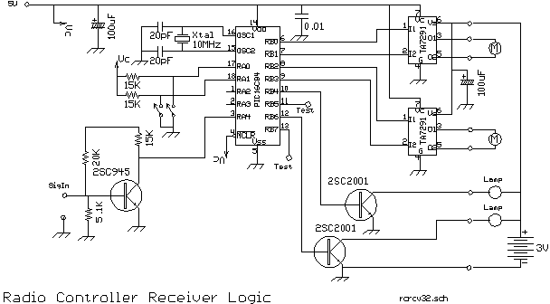
그림 2-13 DC 모터 응용 회로
연 습 문 제
다음 각 물음에 대하여 답을 하시오.
1. 트랜지스터 이용 모터를 구동시 이미터 부하 구동방식에 대해서 설명하시오.
2. H 브릿지 모터제어회로의 동작원리를 설명하시오.
03DC 모터의 가변속 제어법
1. DC 모터의 가변속 제어
DC 모터의 속도를 연속적으로 바꾸려는 경우에는 어떻게 하는가?
기본적으로는 DC 모터에 가하는 전압을 바꾸면 속도는 변화한다.
단순히 모터의 코일에 흐르는 전류와 속도가 정비례하기 때문에 아랫 그림과 같이 하여 모터의 구동전압을 변화시키면 속도를 가변으로 할 수 있는 것이다.
그림 2-13 DC 모터의 드라이브 회로
이 구동전압을 변화시키는 방법으로 아날로그 방식과 펄스폭 변조방식의 두 가지 방법이 있다.
2. 아날로그 방식의 가변속 제어
직접 구동전압 그 자체를 변화시키는 것으로, 기본회로는 아랫 그림과 같다.
즉, 트랜지스터로 전압 dropper를 구성하고, 컬렉터 이미터간의 드롭 전압을 바꿈으로써 모터에 가해지는 구동전압을 가변으로 한다.
이 기본원리에 의해, 드롭퍼 전압이 그대로 열로 되어 손실로 되며, 특히 저속으로 할 때, 전력 사용 효율이 나빠지고 만다.
이 손실로 인해 발생하는 열대책을 위해, 큰 방열판을 필요로 하기 때문에 전체가 대형으로 되고 만다.
그러나, 소형 모터이고, 게다가 속도의 가변폭이 작아도 좋은 경우에는 손실을 작게 할 수 있다는 점과, 제어회로가 간단하기 때문에 흔히 사용되고 있다.
그림 2-14 OP-AMP이용 모터 제어회로
3. 펄스폭 변조(PWM) 방식
PWM 방식은 결과적으로는 구동전압을 바꾸고 있는 것과 같은 효과를 내고 있지만, 그 방법이 펄스폭에 따르고 있으므로 펄스폭 변조(PWM: Pulse Width Modulation)라 부르고 있다.
구체적으로는 모터 구동전원을 일정 주기로 On/Off 하는 펄스 형상으로 하고, 그 펄스의 duty비(On 시간과 Off 시간의 비)를 바꿈으로써 실현하고 있다. 이것은 DC 모터가 빠른 주파수의 변화에는 기계 반응을 하지 않는다는 것을 이용하고 있다.
기본회로는 아랫 그림과 같으며, 그림에서 트랜지스터를 일정시간 간격으로 On/off하면 구동전원이 On/Off 되는 것이다.
그림 2-15 DC 모터 구동 드라이브 회로
이 펄스 형상의 전압으로 DC 모터를 구동했을 때의 실제 모터에 가해지는 전압 파형은 아랫 그림과 같이 되며, 평균전력, 전압을 생각하면 외관상, 구동전압이 변화하고 있는 것이다.
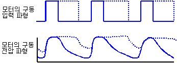
그림 2-16 모터의 구동 전압파형
여기서 중요한 기능을 담당하고 있는 것이 위의 회로도에 있는 다이오드이며, 일반적인 전원용 다이오드를 사용하지만, 그 동작 기능에 의해 flywheel diode라 부르고 있다.
즉, 트랜지스터가 Off로 되어 있는 동안, 모터의 코일에 축적된 에너지를 전류로 흘리는 작용을 한다(회생전류라 부른다).
이 상태를 그림으로 나타내면 아랫 그림과 같이 되며, 이 플라이휠 효과에 의해, 모터에 흐르는 전류는 트랜지스터가 Off로 되어 있는 동안에도 쉬지 않고 흐르고 있는 것처럼 보이게 되며, 평균전류도 On시의 전류와 이 회생전류의 합으로 된다.
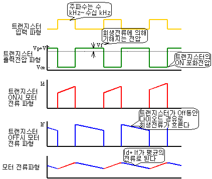
그림 2-17 트랜지스터의 전압과 전류파형
4. IC에 의한 실제 회로
모터 제어용의 전용 IC 가운데는 가변속 제어의 기능을 탑재한 것이 있다. 아래에 대표적인 것을 사용한 실제 제어회로의 예를 소개한다.
아래 예는 스테핑 모터(stepping motor)용이지만, 단독으로 DC 모터의 가변속 제어용으로도 사용할 수 있다.
TA7289P PWM 방식 바이폴러형 스테핑 모터 드라이버의 특징
·동작 전원전압 범위 Vcc=6∼27V
·정회전, 역회전, 스톱의 3가지 모드 선택 제어 가능
·4비트 D/A 컨버터 내장, 가변속 제어 가능
·드라이브 능력 Io=1.5A Max
·PWM chopper 방식에 의한 정전류 구동방식
·외부부착 부품수가 적다
·입력은 LS-TTL compatible
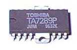
IC의 내부회로 블록은 아랫 그림과 같이 되어 있으며, 펄스폭의 기준이 되는 톱니파를 D/A 변환부 출력의 직류 레벨로 상하 동작시키고 있다.
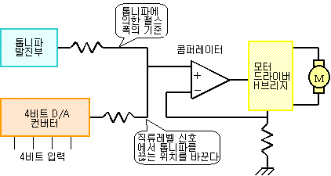
그림 2-18 모터 드라이브 블록도
이 모양을 그림으로 나타내면 중첩되는 D/A 변환부의 직류 레벨에 의해 톱니파가 상하로 움직이고, 출력 레벨을 끊는 위치가 연동하여 움직인다. 이에 따라 출력의 On/Off 펄스폭이 가변되는 것이다.
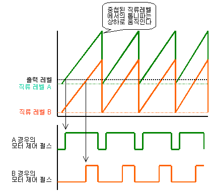
그림 2-19 제어입력과 모터제어 펄스 관계
5. 실제의 사용 사례
아랫 그림은 PWM 방식의 가변속 IC를 사용한 제작 예로, 주행 로봇에 탑재한 회로이다. PIC에서 직접 TA7289P를 컨트롤하고 있다.
4비트의 데이터를 PIC의 포트로 설정하여, 정/역회전의 제어신호에 의해 모터가 회전을 시작한다.
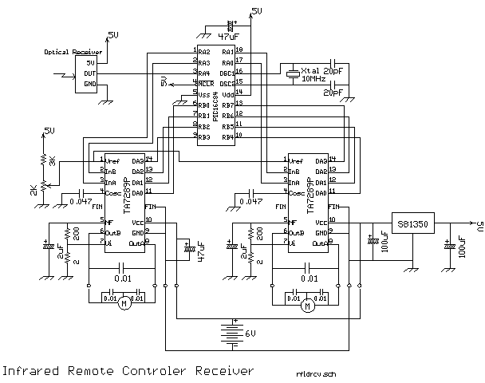
그림 2-20 실제 응용 회로
연 습 문 제
다음 각 물음에 대하여 답을 하시오.
1. 펄스폭 변조(PWM)에 대해서 설명하시오
2. 모터의 역방향으로 다이오드를 삽입하는 이유는 무엇인가.
04모터의 PID 제어법
1. PID 제어란?
자동제어 방식 가운데서 가장 흔히 이용되는 제어방식으로 PID 제어라는 방식이 있다.
이 PID란,
P: Proportinal(비례)
I: Integral(적분)
D: Differential(미분)
의 3가지 조합으로 제어하는 것으로 유연한 제어가 가능해진다.
2. 단순 On/Off 제어
단순한 On/Off 제어의 경우에는 제어 조작량은 0%와 100% 사이를 왕래하므로 조작량의 변화가 너무 크고, 실제 목표값에 대해 지나치게 반복하기 때문에, 목표값의 부근에서 凸凹를 반복하는 제어로 되고 만다.
이 모양을 그림으로 나타내면 아랫 그림과 같이 된다.
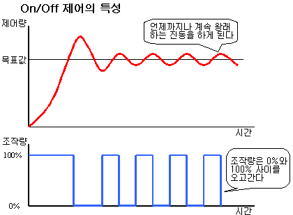
그림 2-21 ON/OFF 제어의 특성 파형
3. 비례 제어
이에 대해 조작량을 목표값과 현재 위치와의 차에 비례한 크기가 되도록 하며, 서서히 조절하는 제어 방법이 비례 제어라고 하는 방식이다.
이렇게 하면 목표값에 접근하면 미묘한 제어를 가할 수 있기 때문에 미세하게 목표값에 가까이 할 수 있다.
이 모양은 아랫 그림과 같이 나타낼 수 있다.
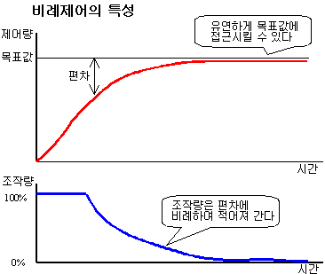
그림 2-22 비례제어의 특성 곡선
4. PI 제어
비례 제어로 잘 제어할 수 있을 것으로 생각하겠지만, 실제로는 제어량이 목표값에 접근하면 문제가 발생한다.
그것은 조작량이 너무 작아지고, 그 이상 미세하게 제어할 수 없는 상태가 발생한다. 결과는 목표값에 아주 가까운 제어량의 상태에서 안정한 상태로 되고 만다.
이렇게 되면 목표값에 가까워지지만, 아무리 시간이 지나도 제어량과 완전히 일치하지 않는 상태로 되고 만다.
이 미소한 오차를 "잔류편차"라고 한다. 이 잔류편차를 없애기 위해 사용되는 것이 적분 제어이다.
즉, 미소한 잔류편차를 시간적으로 누적하여, 어떤 크기로 된 곳에서 조작량을 증가하여 편차를 없애는 식으로 동작시킨다.
이와 같이, 비례 동작에 적분 동작을 추가한 제어를 "PI 제어"라 부른다.
이것을 그림으로 나타내면 아랫 그림과 같이 된다.
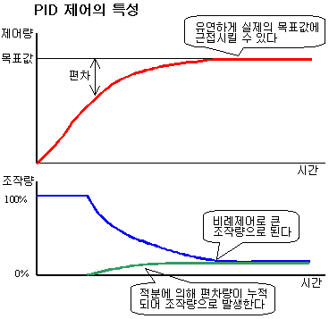
그림 2-23 적분 제어의 특성 곡선
5. 미분 제어와 PID 제어
PI 제어로 실제 목표값에 가깝게 하는 제어는 완벽하게 할 수 있다. 그러나 또 하나 개선의 여지가 있다.
그것은 제어 응답의 속도이다. PI 제어에서는 확실히 목표값으로 제어할 수 있지만, 일정한 시간(시정수)이 필요하다.
이때 정수가 크면 외란이 있을 때의 응답 성능이 나빠진다.
즉, 외란에 대하여 신속하게 반응할 수 없고, 즉시 원래의 목표값으로는 돌아갈 수 없다는 것이다.
그래서, 필요하게 된 것이 미분 동작이다.
이것은 급격히 일어나는 외란에 대해 편차를 보고, 전회 편차와의 차가 큰 경우에는 조작량을 많이 하여 기민하게 반응하도록 한다.
이 전회와의 편차에 대한 변화차를 보는 것이 "미분"에 상당한다.
이 미분동작을 추가한 PID 제어의 경우, 제어 특성은 아랫 그림과 같이 된다.
이것으로 알 수 있듯이 처음에는 상당히 over drive하는 듯이 제어하여, 신속히 목표값이 되도록 적극적으로 제어해 간다.
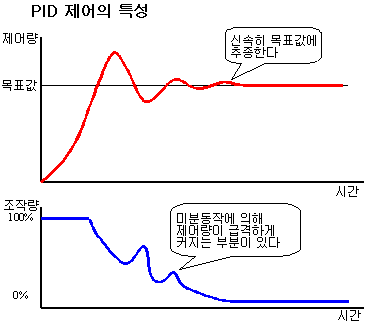
그림 2-24 미분제어 특성 곡선
6. 컴퓨터에 의한 PID 제어 알고리즘
원래 PID 제어는 연속한 아날로그량을 제어하는 것이 기본으로 되어 있다. 그러나, 컴퓨터의 프로그램으로 PID 제어를 실현하려고 하는 경우에는 연속적인 양을 취급할 수 없다. 왜냐하면, 컴퓨터 데이터의 입출력은 일정시간 간격으로밖에 할 수 없기 때문이다.
게다가 미적분 연산을 착실히 하고 있는 것에서는 연산에 요하는 능력으로 인해 고성능의 컴퓨터가 필요하게 되고 만다.
그래서 생각된 것이 샘플링 방식(이산값)에 적합한 PID 연산 방식이다.
우선, 샘플링 방식의 PID 제어의 기본식은 다음과 같이 표현된다.
조작량=Kp×편차+Ki×편차의 누적값+Kd×전회 편차와의 차
(비례항)(적분항)(미분항)
기호로 나타내면
MVn=MVn-1+ΔMVn
ΔMVn=Kp(en-en-1)+Ki en+Kd((en-en-1)-(en-1-en-2))
MVn, MVn-1: 금회, 전회 조작량
ΔMVn: 금회 조작량 미분
en, en-1, en-2: 금회, 전회, 전전회의 편차
이것을 프로그램으로 실현하기 위해서는 이번과 전회의 편차값만 측정할 수 있으면 조작량을 구할 수 있다.
7. 파라미터를 구하는 방법
PID 제어 방식에 있어서의 과제는 각 항에 붙는 정수, Kp, Ki, Kd를 정하는 방법이다.
이것의 최적값을 구하는 방법은 몇 가지 있지만, 어느 것이나 난해하며, 소형의 마이크로컴퓨터로 실현하기 위해서는 번거로운 것이다(tuning이라 부른다).
그래서, 이 파라미터는 cut and try로 실제 제어한 결과에서 최적한 값을 구하고, 그 값을 설정하도록 한다.
참고로 튜닝의 수법을 소개하면 스텝 응답법과 한계 감도법이 유명한 수법이다.
또, 프로세스 제어 분야에서는 이 튜닝을 자동적으로 실행하는 Auto tuning 기능을 갖는 자동제어 유닛도 있다. 이것에는 제어 결과를 학습하고, 그 결과로부터 항상 최적한 파라미터값을 구하여 다음 제어 사이클에 반영하는 기능도 실장되어 있다.
여기서 스텝 응답법에 있어서 파라미터를 구하는 방법을 소개한다.
우선, 제어계의 입력에 스텝 신호를 가하고, 그 출력 결과가 아랫 그림이라고 하자(파라미터는 적당히 설정해 둔다).
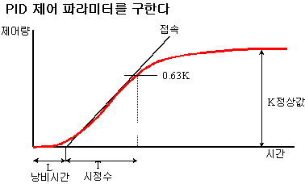
그림 2-25 파라미터 설정
윗 그림과 같이 상승의 곡선에 접선을 긋고, 그것과 축과의 교점, 정상값의 63%에 해당하는 값으로 된 곳의 2점에서,
L: 낭비시간 T: 시정수 K: 정상값의 3가지 값을 구한다.
이 값으로부터, 각 파라미터는 아래 표와 같이 구할 수 있다.
제어 동작 종별 | Kp의 값 | Ki의 값 | Kd의 값 |
비례 제어 | 0.3~0.7T/KL | 0 | 0 |
PI 제어 | 0.35~0.6T/KL | 0.3~0.6/KL | 0 |
PID 제어 | 0.6~0.95T/KL | 0.6~0.7/KL | 0.3~0.45T/K |
표 2-3 각 파라미터의 결정
이 파라미터에 범위가 있지만, 이 크기에 의한 차이는 특성의 차이로 나타나며, 아랫 그림과 같이, 파라미터가 많은 경우에는 미분, 적분 효과가 빨리 효력이 나타나므로 아랫 그림의 적색선의 특성과 같이 overshoot이 크게 눈에 띈다. 파라미터가 작은 쪽의 경우는 하측 황색선의 특성과 같이 된다.
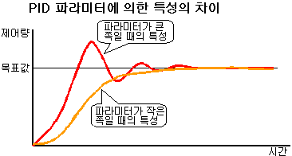
그림 2-26 PID 파라미터의 특성의 차이
연 습 문 제
다음 각 물음에 대하여 답을 하시오.
1. PID 제어란 무엇인가 간단히 설명하시오.
2. 비례제어 및 PI제어 및 PD제어에 대해서 설명하시오.